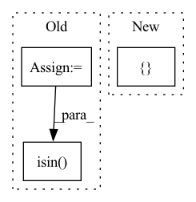

Pattern ID :24692
Before Change
// baseInertialFrameOrientation=[0, 0, 0, 1],
// )
class_ids = np.arange(1, 22)
class_ids = class_ids[~np.isin( class_ids, [10, 18]) ]
class_ids = np.random.choice(class_ids, 10)
object_ids = []
for class_id in class_ids:After Change
position=position,
quaternion=quaternion,
)
coord.translate([ 0.5, -0.5, 0In pattern: SUPERPATTERN
Frequency: 4
Non-data size: 3
Instances Fragment ID: 76539486
Project Name: wkentaro/safepicking
Commit Name: 1a11c14cdd6581a34e985e4d875032525109e855
Time: 2021-03-16
Author: www.kentaro.wada@gmail.com
File Name: examples/goal/bin_packing_no_act.py
M Class Name: AnonimousClass
N Class Name: AnonimousClass
M Method Name: main(0)
N Method Name: main(0)
M Parent Class:
N Parent Class:
M File Name: examples/goal/bin_packing_no_act.py
N File Name: examples/goal/bin_packing_no_act.py
M Start Line: 64
M End Line: 126
N Start Line: 70
N End Line: 123
Before Change
os.path.join(output_dir, f"round_{idx}"), "bias_table.csv"))
bias_table["example_id"] = bias_table["example_id"].map(
lambda x: eval(x).decode("UTF-8")) // pylint:disable=eval-used
ids = np.concatenate(list(
ds.map(lambda example: example["example_id"]).batch(
batch_size).as_numpy_iterator())).tolist()
ids = list(map(lambda x: x.decode("UTF-8"), ids))
subgroup_labels = list(
ds.map(lambda example: example["subgroup_label"]).batch(
batch_size).as_numpy_iterator())
subgroup_labels = np.concatenate(subgroup_labels).tolist()
df_a = pd.DataFrame({"example_id": ids, "subgroup_label": subgroup_labels})
bias_table = bias_table[bias_table["example_id"].isin( ids) ]
predictions_merge = pd.merge(bias_table, df_a, on=["example_id"])
prob_one = (predictions_merge["subgroup_label"]
== 1).sum() / len(predictions_merge)After Change
num_subgroups: int,
) -> pd.DataFrame:
Evaluates model for subgroup representation vs number of rounds.
round_idx = []
subgroup_ids = []
num_samples = []
prob_representation = []
for idx in range(num_rounds): Fragment ID: 76539484
Project Name: google/uncertainty-baselines
Commit Name: f5b53459d654b40668528e806a24776b53864278
Time: 2022-11-03
Author: no-reply@google.com
File Name: experimental/shoshin/evaluate_model_lib.py
M Class Name: AnonimousClass
N Class Name: AnonimousClass
M Method Name: evaluate_active_sampling(5)
N Method Name: evaluate_active_sampling(4)
M Parent Class:
N Parent Class:
M File Name: experimental/shoshin/evaluate_model_lib.py
N File Name: experimental/shoshin/evaluate_model_lib.py
M Start Line: 34
M End Line: 59
N Start Line: 68
N End Line: 92
Before Change
args, kwargs = fake_create_mining_cache.call_args
// Construct the restricted model library data frame
selected_models = restrict_to_models.split(",")
df_model_library_selected = df_model_library[
df_model_library["model_id"].isin( selected_models) .tolist()
]
// Check the args/kwargsAfter Change
db_url.touch()
// Construct arguments
argv = [
f"--data-and-models-dir={spacy_model_path}",
f"--db-type={db_type}",
f"--db-url={db_url}",
f"--target-table-name={target_table_name}",
f"--n-processes-per-model={n_processes_per_model}",
f"--restrict-to-etypes={restrict_to_etypes}" Fragment ID: 76539490
Project Name: bluebrain/search
Commit Name: 05fe137611fffaab1cdfb9f3c04b32bb8964666d
Time: 2021-06-22
Author: 47669575+EmilieDel@users.noreply.github.com
File Name: tests/test_entrypoint/test_create_mining_cache.py
M Class Name: AnonimousClass
N Class Name: AnonimousClass
M Method Name: test_send_through(9)
N Method Name: test_send_through(7)
M Parent Class:
N Parent Class:
M File Name: tests/test_entrypoint/test_create_mining_cache.py
N File Name: tests/test_entrypoint/test_create_mining_cache.py
M Start Line: 88
M End Line: 163
N Start Line: 85
N End Line: 135